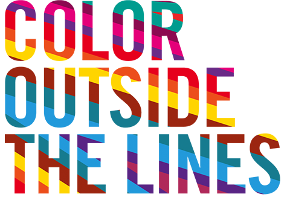
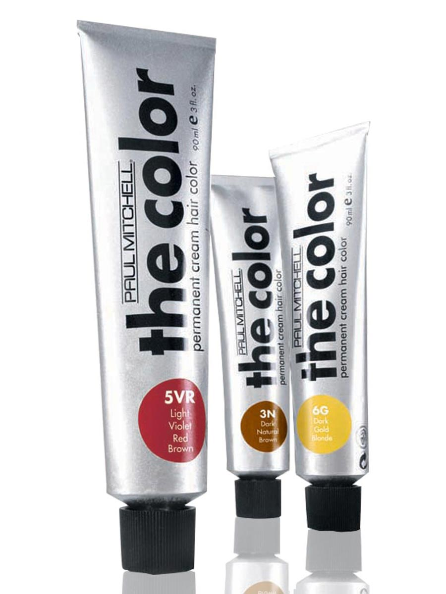
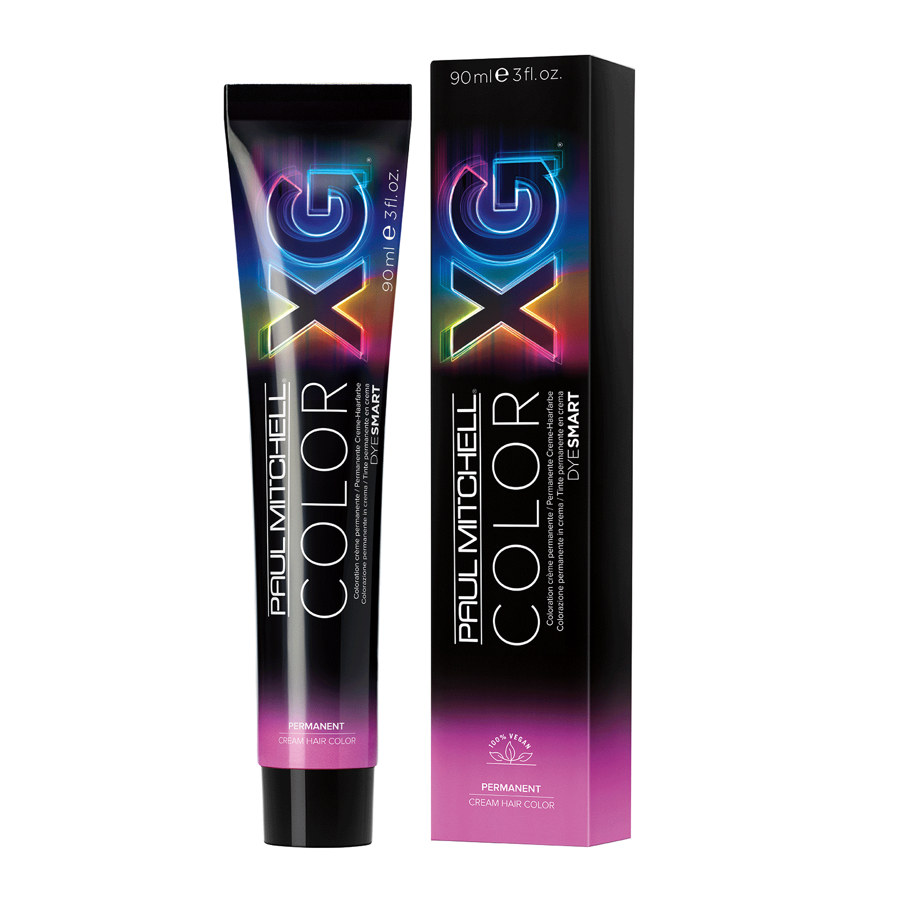

PLACEMENT FOR BALAYAGE
Placement is so important, I like to apply at angle with to create depth throughout the hair.
I like to apply the highest point near the face than drop down.
I like to create V sections to maintain depth.
— Caitlin Keyser —


Placement is so important, I like to apply at angle with to create depth throughout the hair.
I like to apply the highest point near the face than drop down.
I like to create V sections to maintain depth.
— Caitlin Keyser —